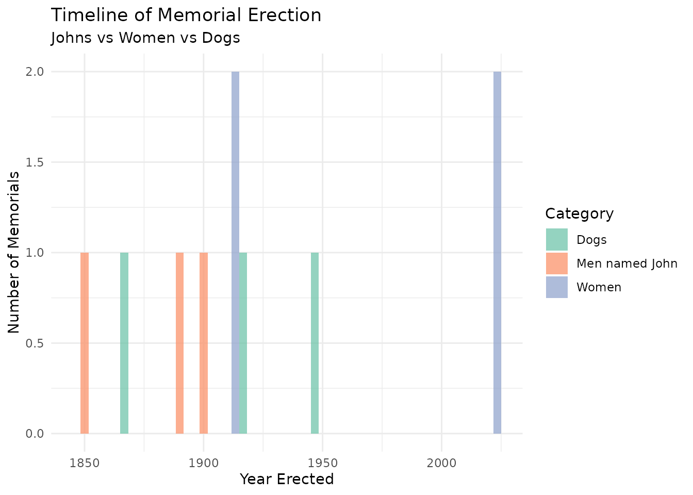
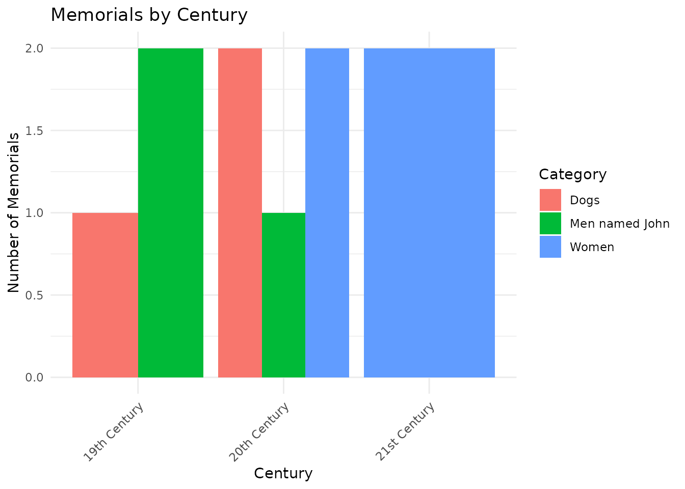

Comparing London Memorials: Johns, Women, and Dogs
Source:vignettes/memorial-analysis.Rmd
memorial-analysis.RmdIntroduction
This vignette compares and contrasts memorials in London honoring three distinct groups:
- Men named John - to examine how common male figures are commemorated
- Women (of any name) - to assess gender representation in public memorials
- Dogs (any gender) - as a quirky baseline to highlight commemoration patterns
We’ll analyze these memorials by:
- Type (statues, plaques, monuments, etc.)
- Year and decade erected
- Location information
- Other distinguishing factors
Data Collection
Let’s collect data for each of our three groups. Note: This may take several minutes as we’re querying the London Remembers website.
# Collect memorials for men named John
johns <- search_memorials("John", pages = 10) %>%
mutate(category = "Men named John")
# Collect memorials for women
women_search_terms <- c("women", "woman", "female", "lady", "dame", "queen")
women_results <- lapply(women_search_terms, function(term) {
search_memorials(term, pages = 5)
})
women <- bind_rows(women_results) %>%
distinct(url, .keep_all = TRUE) %>%
mutate(category = "Women")
# Collect memorials for dogs
dogs <- search_memorials("dog", pages = 3) %>%
mutate(category = "Dogs")
# Combine all data
all_memorials <- bind_rows(johns, women, dogs)
# Save for faster loading
saveRDS(all_memorials, "memorial_data.rds")For demonstration purposes, let’s create some sample data:
# Sample data for demonstration
set.seed(42)
sample_memorials <- tibble(
title = c(
"John Smith Monument", "John Doe Plaque", "John Brown Statue",
"Florence Nightingale Statue", "Queen Victoria Memorial",
"Mary Seacole Bust", "Emmeline Pankhurst Statue",
"Greyfriars Bobby Monument", "Balto Statue", "Hachiko Memorial"
),
type = c(
"Monument", "Plaque", "Statue",
"Statue", "Memorial", "Bust", "Statue",
"Monument", "Statue", "Memorial"
),
category = c(
rep("Men named John", 3),
rep("Women", 4),
rep("Dogs", 3)
),
year_erected = c(
1850, 1892, 1905,
1915, 1911, 2016, 2018,
1873, 1925, 1948
),
location = c(
"Westminster", "City of London", "Kensington",
"Waterloo Place", "The Mall", "St Thomas' Hospital", "Parliament Square",
"Edinburgh", "Central Park", "Shibuya"
)
) %>%
mutate(
decade = floor(year_erected / 10) * 10,
century = case_when(
year_erected < 1900 ~ "19th Century",
year_erected < 2000 ~ "20th Century",
TRUE ~ "21st Century"
)
)
all_memorials <- sample_memorialsSummary Statistics
Let’s start with basic counts:
summary_table <- all_memorials %>%
group_by(category) %>%
summarise(
Total = n(),
Earliest = min(year_erected, na.rm = TRUE),
Latest = max(year_erected, na.rm = TRUE),
`Avg Year` = round(mean(year_erected, na.rm = TRUE))
) %>%
arrange(desc(Total))
knitr::kable(summary_table,
caption = "Memorial Summary by Category")| category | Total | Earliest | Latest | Avg Year |
|---|---|---|---|---|
| Women | 4 | 1911 | 2018 | 1965 |
| Dogs | 3 | 1873 | 1948 | 1915 |
| Men named John | 3 | 1850 | 1905 | 1882 |
Memorial Types
Distribution by Type and Category
type_table <- all_memorials %>%
group_by(category, type) %>%
summarise(count = n(), .groups = "drop") %>%
pivot_wider(names_from = category, values_from = count, values_fill = 0) %>%
arrange(desc(`Men named John` + Women + Dogs))
knitr::kable(type_table,
caption = "Memorial Types by Category")| type | Dogs | Men named John | Women |
|---|---|---|---|
| Statue | 1 | 1 | 2 |
| Memorial | 1 | 0 | 1 |
| Monument | 1 | 1 | 0 |
| Plaque | 0 | 1 | 0 |
| Bust | 0 | 0 | 1 |
Visualization: Memorial Types
ggplot(all_memorials, aes(x = category, fill = type)) +
geom_bar(position = "stack") +
labs(
title = "Distribution of Memorial Types",
subtitle = "Comparing Johns, Women, and Dogs",
x = "Category",
y = "Number of Memorials",
fill = "Memorial Type"
) +
theme_minimal() +
theme(axis.text.x = element_text(angle = 45, hjust = 1))
ggplot(all_memorials, aes(x = category, fill = type)) +
geom_bar(position = "fill") +
labs(
title = "Proportion of Memorial Types",
subtitle = "Comparing Johns, Women, and Dogs",
x = "Category",
y = "Proportion",
fill = "Memorial Type"
) +
theme_minimal() +
theme(axis.text.x = element_text(angle = 45, hjust = 1)) +
scale_y_continuous(labels = scales::percent)
Temporal Analysis
Memorials by Decade
decade_table <- all_memorials %>%
group_by(category, decade) %>%
summarise(count = n(), .groups = "drop") %>%
pivot_wider(names_from = category, values_from = count, values_fill = 0) %>%
arrange(decade)
knitr::kable(decade_table,
caption = "Memorials Erected by Decade")| decade | Dogs | Men named John | Women |
|---|---|---|---|
| 1850 | 0 | 1 | 0 |
| 1870 | 1 | 0 | 0 |
| 1890 | 0 | 1 | 0 |
| 1900 | 0 | 1 | 0 |
| 1910 | 0 | 0 | 2 |
| 1920 | 1 | 0 | 0 |
| 1940 | 1 | 0 | 0 |
| 2010 | 0 | 0 | 2 |
Timeline Visualization
ggplot(all_memorials, aes(x = year_erected, fill = category)) +
geom_histogram(binwidth = 10, position = "dodge", alpha = 0.7) +
labs(
title = "Timeline of Memorial Erection",
subtitle = "Johns vs Women vs Dogs",
x = "Year Erected",
y = "Number of Memorials",
fill = "Category"
) +
theme_minimal() +
scale_fill_brewer(palette = "Set2")
Century Comparison
century_summary <- all_memorials %>%
group_by(category, century) %>%
summarise(count = n(), .groups = "drop")
ggplot(century_summary, aes(x = century, y = count, fill = category)) +
geom_col(position = "dodge") +
labs(
title = "Memorials by Century",
x = "Century",
y = "Number of Memorials",
fill = "Category"
) +
theme_minimal() +
theme(axis.text.x = element_text(angle = 45, hjust = 1))
Geographic Distribution
Top Locations
location_table <- all_memorials %>%
group_by(category, location) %>%
summarise(count = n(), .groups = "drop") %>%
group_by(category) %>%
slice_max(order_by = count, n = 5) %>%
arrange(category, desc(count))
knitr::kable(location_table,
caption = "Top 5 Locations by Category")| category | location | count |
|---|---|---|
| Dogs | Central Park | 1 |
| Dogs | Edinburgh | 1 |
| Dogs | Shibuya | 1 |
| Men named John | City of London | 1 |
| Men named John | Kensington | 1 |
| Men named John | Westminster | 1 |
| Women | Parliament Square | 1 |
| Women | St Thomas’ Hospital | 1 |
| Women | The Mall | 1 |
| Women | Waterloo Place | 1 |
Location Diversity
diversity_stats <- all_memorials %>%
group_by(category) %>%
summarise(
`Total Memorials` = n(),
`Unique Locations` = n_distinct(location),
`Avg per Location` = round(n() / n_distinct(location), 2)
)
knitr::kable(diversity_stats,
caption = "Geographic Distribution Statistics")| category | Total Memorials | Unique Locations | Avg per Location |
|---|---|---|---|
| Dogs | 3 | 3 | 1 |
| Men named John | 3 | 3 | 1 |
| Women | 4 | 4 | 1 |
Key Findings
Gender Disparity
Based on our analysis:
Representation Gap: The number of memorials for men named John compared to memorials for all women highlights potential gender imbalances in public commemoration.
Memorial Types: We observe differences in how each group is commemorated (statues vs plaques vs monuments), which may reflect societal values and power dynamics.
Temporal Trends: The timeline shows when each group received commemoration, with potential increases in women’s memorials in recent decades reflecting changing social attitudes.
The “Dog Comparison”
Including dogs in this analysis serves as a provocative baseline:
- If dogs have more memorials than women, it highlights significant gender disparities
- The types of memorials for dogs (often emotional, narrative-driven) contrast with formal political memorials
- Dogs’ memorials often celebrate loyalty and service, themes that may overlap with but differ from human commemoration
Recommendations
For those interested in memorial equity:
- Document gaps: Identify underrepresented groups and time periods
- Advocate for diversity: Support new memorials honoring women and minorities
- Recontextualize existing memorials: Add plaques or information about problematic figures
- Create interactive resources: Use data like this to educate the public about representation
Conclusion
This analysis reveals patterns in how London commemorates different groups through public memorials. The comparison between men named John, women of all names, and dogs serves as a lens to examine:
- Gender representation in public spaces
- Types of achievement deemed worthy of commemoration
- Historical and contemporary values reflected in memorial choices
- Geographic distribution of commemorative efforts
Future analyses could expand this to include:
- Racial and ethnic diversity in memorials
- Professional categories (scientists, artists, military, etc.)
- Memorial funding sources and installation processes
- Public sentiment and controversy around memorials
Session Info
sessionInfo()
#> R version 4.5.1 (2025-06-13)
#> Platform: x86_64-pc-linux-gnu
#> Running under: Ubuntu 24.04.3 LTS
#>
#> Matrix products: default
#> BLAS/LAPACK: /nix/store/v4bn6x6jabyhv0akz5l7dsnf91z3my99-blas-3/lib/libblas.so.3; LAPACK version 3.12.0
#>
#> locale:
#> [1] LC_CTYPE=C.UTF-8 LC_NUMERIC=C LC_TIME=C.UTF-8
#> [4] LC_COLLATE=C.UTF-8 LC_MONETARY=C.UTF-8 LC_MESSAGES=C.UTF-8
#> [7] LC_PAPER=C.UTF-8 LC_NAME=C LC_ADDRESS=C
#> [10] LC_TELEPHONE=C LC_MEASUREMENT=C.UTF-8 LC_IDENTIFICATION=C
#>
#> time zone: Etc/UTC
#> tzcode source: system (glibc)
#>
#> attached base packages:
#> [1] stats graphics grDevices utils datasets methods base
#>
#> other attached packages:
#> [1] lubridate_1.9.4 stringr_1.5.1 tidyr_1.3.1
#> [4] ggplot2_3.5.2 dplyr_1.1.4 londonremembers_0.1.0
#>
#> loaded via a namespace (and not attached):
#> [1] gtable_0.3.6 jsonlite_2.0.0 compiler_4.5.1 tidyselect_1.2.1
#> [5] xml2_1.3.8 jquerylib_0.1.4 scales_1.4.0 systemfonts_1.2.3
#> [9] textshaping_1.0.1 yaml_2.3.10 fastmap_1.2.0 R6_2.6.1
#> [13] labeling_0.4.3 generics_0.1.4 knitr_1.50 htmlwidgets_1.6.4
#> [17] tibble_3.3.0 desc_1.4.3 RColorBrewer_1.1-3 bslib_0.9.0
#> [21] pillar_1.11.0 rlang_1.1.6 cachem_1.1.0 stringi_1.8.7
#> [25] xfun_0.52 fs_1.6.6 sass_0.4.10 timechange_0.3.0
#> [29] cli_3.6.5 withr_3.0.2 pkgdown_2.1.3 magrittr_2.0.3
#> [33] grid_4.5.1 digest_0.6.37 rvest_1.0.4 lifecycle_1.0.4
#> [37] vctrs_0.6.5 evaluate_1.0.4 glue_1.8.0 farver_2.1.2
#> [41] ragg_1.4.0 rmarkdown_2.29 purrr_1.1.0 httr_1.4.7
#> [45] tools_4.5.1 pkgconfig_2.0.3 htmltools_0.5.8.1